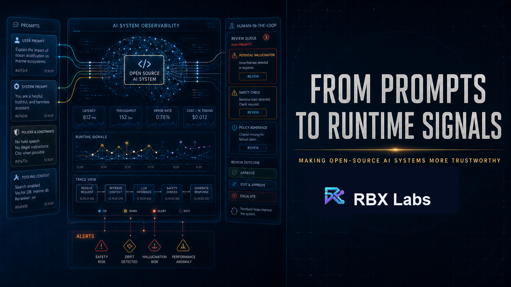
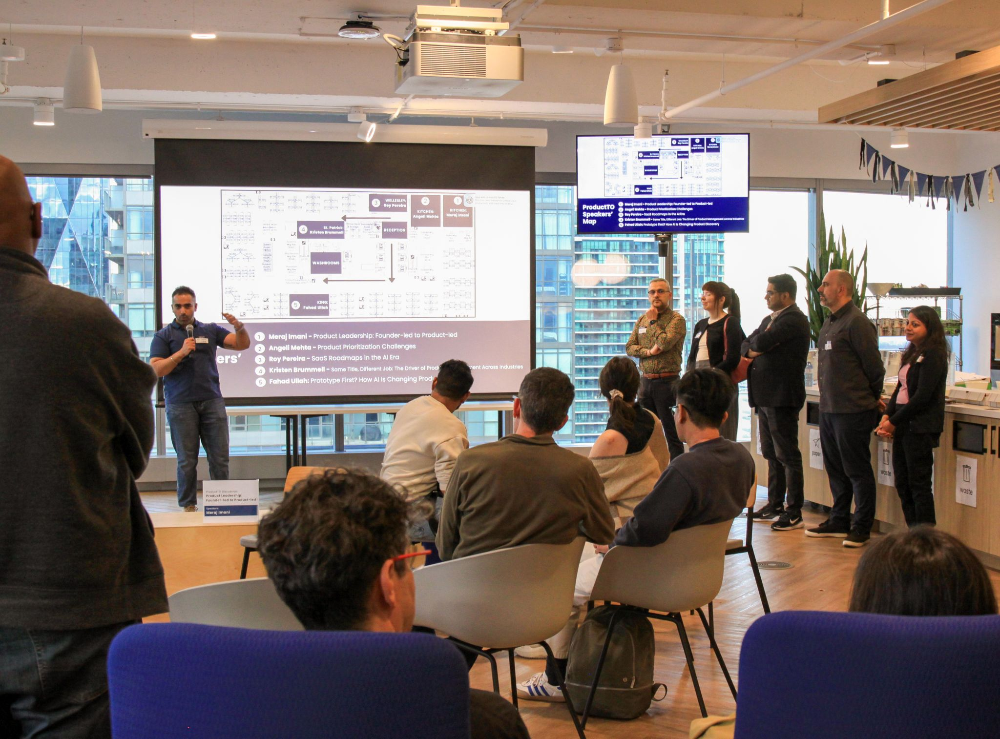
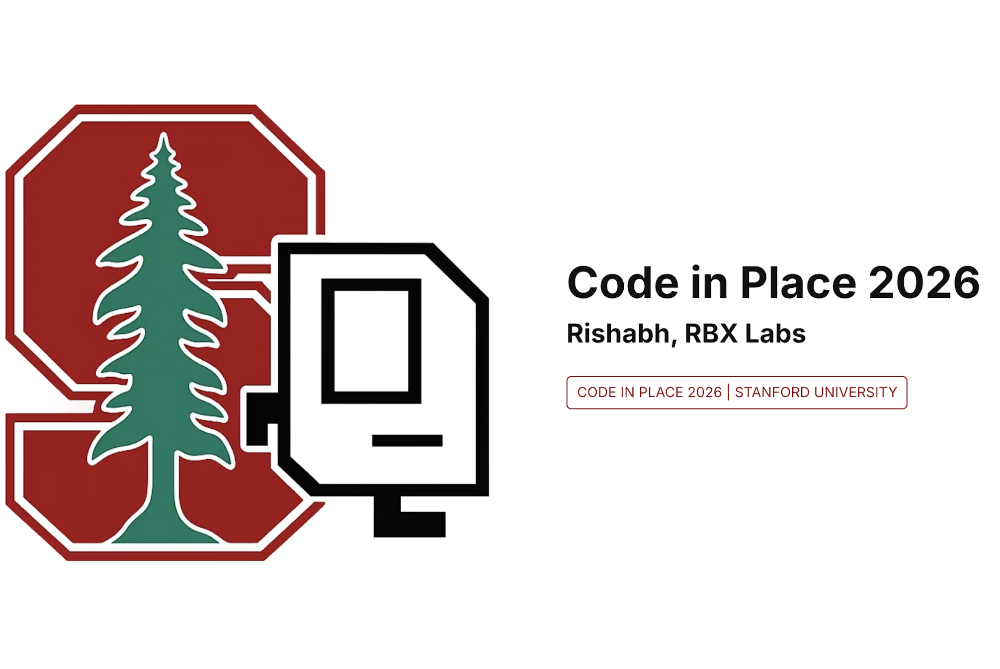

Open by design
Make the signals, assumptions, and decision paths inspectable.
Rishabh Banga builds AI workflows, trust systems, and structured-community infrastructure that make agentic participation more trusted, incentive-aware, and governable.
Humans and agents will coordinate, recommend, transact, and respond to incentives. The winning product layer is not the agent itself. It is the infrastructure around agentic participation.
Make the signals, assumptions, and decision paths inspectable.
Evaluation, explanation, escalation, and accountability belong in the workflow.
Reward trusted participation and make reputation useful across the system.
A product sprint across AI workflows, trust systems, and structured-community GTM. Each artifact strengthens the next.
From community activity to operator guidance.
A functional AI workflow translating member, post, event, comment, visit, and engagement activity into trust and engagement signals operators can act on.
Trust as shared infrastructure for humans and agents.
Agents need permissions, reputation, incentives, dispute paths, and legible decision histories before they can participate economically.
The beachhead for the agentic economy.
Where coordination is hard, workflow design creates defensible and sticky product value.
Each system turns ambiguous AI participation into evaluation, signals, and accountable action.
Pre-connection Wi-Fi trust that turns diagnostics, reputation history, and confidence signals into a decision before the first packet leaves the device.
AI-powered trust, discovery, ranking, and moderation systems with policy-driven review paths.
A connected planning, booking, and concierge workflow designed around constraints and valid outputs.
A deterministic product-specification workflow that converts rough product thinking into structured, inspectable, executable specifications.
Talks and trainings across open-source AI, runtime trust signals, reliable agentic systems, and responsible adoption.

Building trust layers with open source for reliable AI.
Event profile ↗
Making open-source AI systems easier to evaluate, monitor, and trust.
Schedule ↗
Evaluation gates, escalation paths, and human review for public safety workflows.

Building AI systems that work in the real world.
Delegating real work to agents without losing judgment or control.

Focus, prioritization, and decision-making across several products.

Section lead for Stanford's intro Python course, supporting live problem-solving and debugging.
Invite Rishabh to speak, facilitate a workshop, or advise your team on trustworthy AI.
Invite RishabhShort notes, diagrams, and product questions from the work.
Users trust products when decisions are legible, recoverable, and accountable.
Reputation and reward systems are product mechanics, not just economic theory.
Turn messy activity into guidance people can use, inspect, and improve.
Rishabh Banga is an AI product leader and operator working across enterprise agents, trust systems, workflow infrastructure, and structured-community GTM.
His work connects product strategy to the details that make participation safe and useful: evaluation, incentives, human oversight, escalation, and adoption.